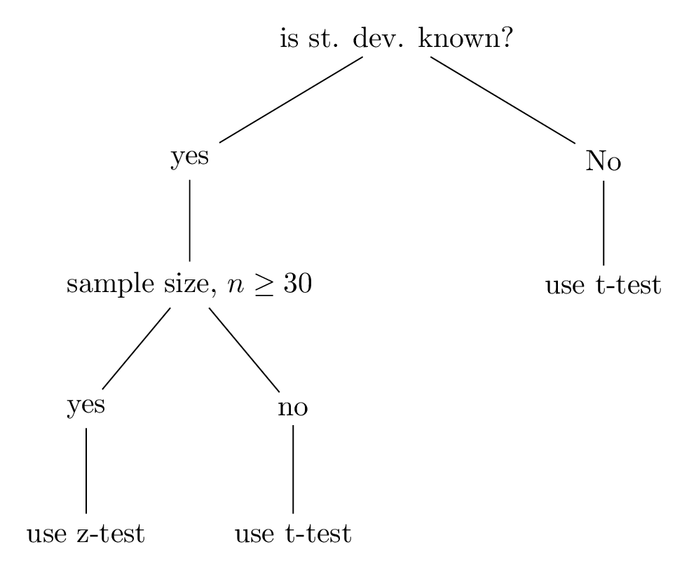

Section 4.1 Hypothesis Testing
Hypothesis testing is a statistical method to draw conclusions (or make inferences) about a population based on sample data. It involves making an assumption (the hypothesis) and then using statistical techniques to determine the likelihood that this assumption is true. There are two categories of hypothesis testing: parametric and non-parametric. Parametric test gives generalization of generating records regarding the mean of the population. It is based on the assumption that the population data are normally distributed. Z-test, t-test, Annova tests are usually used in parametric test. Non-parametric test does not require any population distributin and are used when parametric test assumptions cannot be satisfied. \(\chi^2\) test, Kruskal-Wallis test, Wilcoxon Signed-Rank test, Mann-Whitney U test, etc.
Use Parametric Tests When: The sample size is large enough (often \(n \gt 30\)) to rely on the Central Limit Theorem, which implies that the sample mean will be approximately normally distributed. The data is normally distributed, or you have sufficient evidence to assume normality.
Use Non-Parametric Tests When: The data does not meet the assumptions required for parametric tests, such as normality. The sample size is small, making it difficult to assess or rely on the assumption of normality. You are dealing with ordinal data or ranked data instead of interval or ratio data. The data includes outliers or is skewed, which could affect the results of parametric tests.
Here’s a basic outline of the hypothesis test process:
- Formulate Hypotheses: Null Hypothesis \((H_0)\text{:}\) This is a statement of no effect or no difference. It represents the status quo or a baseline assumption. It assumes that there is no significant difference between the sample and population mean. Alternative Hypothesis \((H_1 or H_a)\text{:}\) This is a statement that indicates the presence of an effect or a difference. It represents what you are trying to prove.
- Choose the Significance Level \((\alpha)\text{:}\) The significance level is the probability of rejecting the null hypothesis when it is actually true. Common values for \(\alpha\) are 0.05, 0.01, and 0.10.
- Select the Appropriate Test: The choice of test depends on the type of data and the hypothesis. Common tests include t-tests, chi-square (\(\chi^2\)) tests, ANOVA test, F-test, and regression analysis.
- Calculate the Test Statistic: This involves computing a value (test statistic) from the sample data that is used to evaluate the hypotheses.
- Determine the P-value: The p-value is the probability of observing the test statistic or something more extreme if the null hypothesis is true. It helps in deciding whether to reject the null hypothesis.
- Compare the P-value with the Significance Level: If the p-value is less than or equal to \(\alpha\text{,}\) reject the null hypothesis in favor of the alternative hypothesis. If the p-value is greater than \(\alpha\text{,}\) fail to reject the null hypothesis.
- Draw a Conclusion: Based on the comparison, conclude whether there is sufficient evidence to support the alternative hypothesis.
Subsection 4.1.1 Test Selection
The choice between using a chi-square test, ANOVA, or F-test or others depends on the type of data you have and the hypotheses you are testing. Here’s a brief overview to help you decide which test to use:
Z or T test: If population standard deviation is not known and the sample size is relatively small (typically \(n \lt 30\)), then t-test is used instead of the Z-test. The t-test is more appropriate in these situations because it accounts for the additional variability introduced by estimating the population standard deviation from the sample.

z-test: \(n \geq 30.\) and t-test: \(n \lt 30.\)
Chi-square test: The chi-square test is used for categorical data to test relationships between variables or the goodness of fit of observed data to an expected distribution.
- Chi-Square Test for Independence: Used to determine if there is a significant association between two categorical variables. Example: Testing if there is a relationship between gender (male, female) and voting preference (yes, no).
- Chi-Square Goodness of Fit Test: Used to determine if a sample data matches a population with a specific distribution. Example: Testing if the distribution of colors of M & Ms in a bag matches the company’s stated proportions.
ANOVA (Analysis of Variance): ANOVA is used for comparing the means of three or more groups to see if at least one group mean is significantly different from the others.
- One-Way ANOVA: Used when comparing the means of three or more independent groups based on one factor. Example: Testing if the average exam scores differ among students taught by three different teaching methods.
- Two-Way ANOVA: Used when comparing means based on two factors and their interaction. Example: Testing if exam scores are affected by both teaching method and type of school (public, private).
F-Test: The F-test is used to compare variances or test hypotheses that involve variances.
- F-test for Variances: Used to compare the variances of two populations to see if they are significantly different. Example: Testing if the variance in test scores between two classes is different.
- F-statistic in ANOVA: The F-statistic is used within the ANOVA framework to determine if there are significant differences between group means. Example: As part of one-way or two-way ANOVA to compare group means.
Subsubsection 4.1.1.1 One sample and two sample test.
\begin{equation*}
\begin{array}{c|c|c}
Categorical & Continuous & Categorical \\ \hline
Gender & score & Subject \\ \hline
M & 90 & A \\
F & 85 & A \\
M & 84 & B \\
F & 91 & B \\ \hline
\end{array}
\end{equation*}
When to use which test?
\begin{equation*}
\begin{array}{c|c|c}
{} & Categorical & Continuous \\ \hline
Categorical & chi-sq. & t-test, Annova \\ \hline
Continuous & \text{ logistic regression} & Correlation \\
\hline
\end{array}
\end{equation*}
-
On analysis of one variable test (or one sample test):
1
Continuous variables are counted or measured.2
Categorical variables cannot be counted.For one sample continuous variable, we use one sample t -test or z-test.For one sample categorical variable, we use one sample proportion test. - For two sample continuous to continuous variables, we find correlation.
-
For one sample categorical and one continuous variable:if there are only two classes in categorical variables, we use two-sample t-test or z-test.if there are more than two classes in categorical variable, we use Annova test.
- For two categorical variables, we use chi-square test.
- For one categorical and one continuous variables but the target is categorical variable, then we go to logistic regression.
Subsubsection 4.1.1.2 One-tail and two-tail Test
Technique to identify one-tailed and two-tailed test:
- If the statement of questions uses the comparative degree: less than, more than, smaller than, larger than, taller than, superior, inferior, increase, decrease, at least, at most, only improved, then use one-tailed test.
- Otherwise, use two -tailed test.
Note: If \(\mu \lt \mu_o\) use Left-Tailed test, if \(\mu \gt \mu_o\) then use right-tailed test, and if \(\mu \neq \mu_o\) then use two-tailed test.